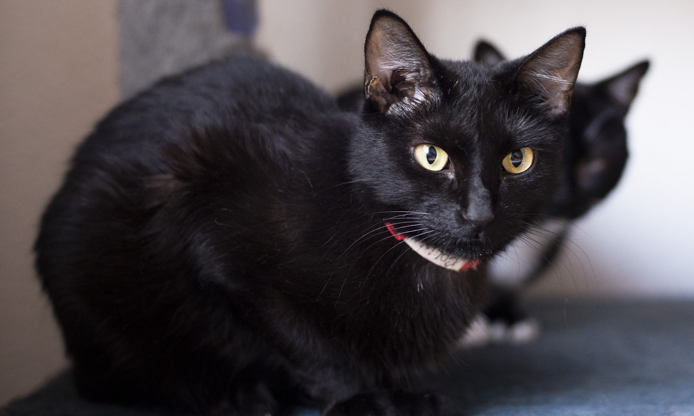
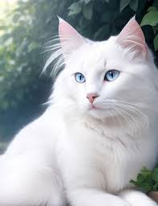
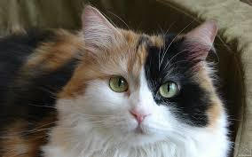

Assim como todos os seres, os gatos têm características únicas como, por exemplo, a sua pelagem. Elas são determinadas pela genética de cada gato e podem estar presentes em todas as raças! Depois faço um post contando sobre os tipos de raças que existem. 😉
Veja abaixo os tipos de pelagem que existem e depois me conta qual é a do seu gatinho! 😀
Sólidas: é aquele gato que tem uma cor só. Preto, cinza, amarelo, etc. Detalhe que os gatos brancos não entram nessa classificação! A pelagem toda branca tem ausência de cor. É comum até os gatinhos que hoje são brancos terem nascido com alguma manchinha, alguma cor em algum lugar e ter perdido isso com o tempo. Interessante, né?
Branco: como eu comentei, os gatos brancos não entram na classificação de cor sólida pois a pelagem branca é ausência de cor. Uma curiosidade, mas que não é regra, é que os gatos todos brancos tem chance de serem surdos. Veja aí:
Particolor: é aquela pelagem de branco com alguma outra cor. Branco e amarelo, branco e preto, branco e cinza, etc. Eles podem ser bicolores ou tricolores. Os “Frajolinhas” e os gatos que são brancos com algum padrão rajadinho também entram nessa classificação. Veja alguns exemplos abaixo.
Shaded: nesse tipo de pelagem os pelos são brancos com alguma cor nas pontas, parecendo que o gato tem uma sombra colorida por cima mesmo, olha que fofura!